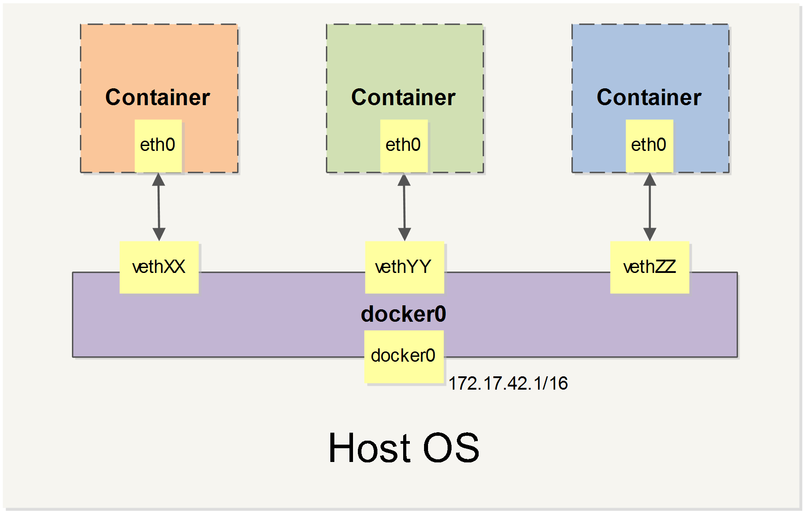

注意：本章属于
Docker高级配置，如果您是初学者，您可以暂时跳过本章节，直接学习 Docker Compose 一节。
本章将介绍 Docker 的一些高级网络配置和选项。
当 Docker 启动时，会自动在主机上创建一个 docker0 虚拟网桥，实际上是 Linux 的一个 bridge，可以理解为一个软件交换机。它会在挂载到它的网口之间进行转发。
同时，Docker 随机分配一个本地未占用的私有网段（在 RFC1918 中定义）中的一个地址给 docker0 接口。比如典型的 172.17.42.1，掩码为 255.255.0.0。此后启动的容器内的网口也会自动分配一个同一网段（172.17.0.0/16）的地址。
当创建一个 Docker 容器的时候，同时会创建了一对 veth pair 接口（当数据包发送到一个接口时，另外一个接口也可以收到相同的数据包）。这对接口一端在容器内，即 eth0；另一端在本地并被挂载到 docker0 网桥，名称以 veth 开头（例如 vethAQI2QT）。通过这种方式，主机可以跟容器通信，容器之间也可以相互通信。Docker 就创建了在主机和所有容器之间一个虚拟共享网络。

接下来的部分将介绍在一些场景中，Docker 所有的网络定制配置。以及通过 Linux 命令来调整、补充、甚至替换 Docker 默认的网络配置。
下面是一个跟 Docker 网络相关的命令列表。
其中有些命令选项只有在 Docker 服务启动的时候才能配置，而且不能马上生效。
-b BRIDGE 或 --bridge=BRIDGE 指定容器挂载的网桥--bip=CIDR 定制 docker0 的掩码-H SOCKET... 或 --host=SOCKET... Docker 服务端接收命令的通道--icc=true|false 是否支持容器之间进行通信--ip-forward=true|false 请看下文容器之间的通信--iptables=true|false 是否允许 Docker 添加 iptables 规则--mtu=BYTES 容器网络中的 MTU下面2个命令选项既可以在启动服务时指定，也可以在启动容器时指定。在 Docker 服务启动的时候指定则会成为默认值，后面执行 docker run 时可以覆盖设置的默认值。
--dns=IP_ADDRESS... 使用指定的DNS服务器--dns-search=DOMAIN... 指定DNS搜索域最后这些选项只有在 docker run 执行时使用，因为它是针对容器的特性内容。
-h HOSTNAME 或 --hostname=HOSTNAME 配置容器主机名--link=CONTAINER_NAME:ALIAS 添加到另一个容器的连接--net=bridge|none|container:NAME_or_ID|host 配置容器的桥接模式-p SPEC 或 --publish=SPEC 映射容器端口到宿主主机-P or --publish-all=true|false 映射容器所有端口到宿主主机容器的访问控制，主要通过 Linux 上的 iptables 防火墙来进行管理和实现。iptables 是 Linux 上默认的防火墙软件，在大部分发行版中都自带。
容器要想访问外部网络，需要本地系统的转发支持。在Linux 系统中，检查转发是否打开。
$sysctl net.ipv4.ip_forward
net.ipv4.ip_forward = 1如果为 0，说明没有开启转发，则需要手动打开。
$sysctl -w net.ipv4.ip_forward=1如果在启动 Docker 服务的时候设定 --ip-forward=true, Docker 就会自动设定系统的 ip_forward 参数为 1。
容器之间相互访问，需要两方面的支持。
docker0 网桥上。iptables 是否允许通过。当启动 Docker 服务（即 dockerd）的时候，默认会添加一条转发策略到本地主机 iptables 的 FORWARD 链上。策略为通过（ACCEPT）还是禁止（DROP）取决于配置--icc=true（缺省值）还是 --icc=false。当然，如果手动指定 --iptables=false 则不会添加 iptables 规则。
可见，默认情况下，不同容器之间是允许网络互通的。如果为了安全考虑，可以在 /etc/docker/daemon.json 文件中配置 {"icc": false} 来禁止它。
在通过 -icc=false 关闭网络访问后，还可以通过 --link=CONTAINER_NAME:ALIAS 选项来访问容器的开放端口。
例如，在启动 Docker 服务时，可以同时使用 icc=false --iptables=true 参数来关闭允许相互的网络访问，并让 Docker 可以修改系统中的 iptables 规则。
此时，系统中的 iptables 规则可能是类似
$ sudo iptables -nL
...
Chain FORWARD (policy ACCEPT)
target prot opt source destination
DROP all -- 0.0.0.0/0 0.0.0.0/0
...之后，启动容器（docker run）时使用 --link=CONTAINER_NAME:ALIAS 选项。Docker 会在 iptable 中为 两个容器分别添加一条 ACCEPT 规则，允许相互访问开放的端口（取决于 Dockerfile 中的 EXPOSE 指令）。
当添加了 --link=CONTAINER_NAME:ALIAS 选项后，添加了 iptables 规则。
$ sudo iptables -nL
...
Chain FORWARD (policy ACCEPT)
target prot opt source destination
ACCEPT tcp -- 172.17.0.2 172.17.0.3 tcp spt:80
ACCEPT tcp -- 172.17.0.3 172.17.0.2 tcp dpt:80
DROP all -- 0.0.0.0/0 0.0.0.0/0注意：--link=CONTAINER_NAME:ALIAS 中的 CONTAINER_NAME 目前必须是 Docker 分配的名字，或使用 --name 参数指定的名字。主机名则不会被识别。
默认情况下，容器可以主动访问到外部网络的连接，但是外部网络无法访问到容器。
容器所有到外部网络的连接，源地址都会被 NAT 成本地系统的 IP 地址。这是使用 iptables 的源地址伪装操作实现的。
查看主机的 NAT 规则。
$ sudo iptables -t nat -nL
...
Chain POSTROUTING (policy ACCEPT)
target prot opt source destination
MASQUERADE all -- 172.17.0.0/16 !172.17.0.0/16
...其中，上述规则将所有源地址在 172.17.0.0/16 网段，目标地址为其他网段（外部网络）的流量动态伪装为从系统网卡发出。MASQUERADE 跟传统 SNAT 的好处是它能动态从网卡获取地址。
容器允许外部访问，可以在 docker run 时候通过 -p 或 -P 参数来启用。
不管用那种办法，其实也是在本地的 iptable 的 nat 表中添加相应的规则。
使用 -P 时：
$ iptables -t nat -nL
...
Chain DOCKER (2 references)
target prot opt source destination
DNAT tcp -- 0.0.0.0/0 0.0.0.0/0 tcp dpt:49153 to:172.17.0.2:80使用 -p 80:80 时：
$ iptables -t nat -nL
Chain DOCKER (2 references)
target prot opt source destination
DNAT tcp -- 0.0.0.0/0 0.0.0.0/0 tcp dpt:80 to:172.17.0.2:80注意：
这里的规则映射了 0.0.0.0，意味着将接受主机来自所有接口的流量。用户可以通过 -p IP:host_port:container_port 或 -p IP::port 来指定允许访问容器的主机上的 IP、接口等，以制定更严格的规则。
如果希望永久绑定到某个固定的 IP 地址，可以在 Docker 配置文件 /etc/docker/daemon.json 中添加如下内容。
{
"ip": "0.0.0.0"
}除了默认的 docker0 网桥，用户也可以指定网桥来连接各个容器。
在启动 Docker 服务的时候，使用 -b BRIDGE或--bridge=BRIDGE 来指定使用的网桥。
如果服务已经运行，那需要先停止服务，并删除旧的网桥。
$ sudo systemctl stop docker
$ sudo ip link set dev docker0 down
$ sudo brctl delbr docker0然后创建一个网桥 bridge0。
$ sudo brctl addbr bridge0
$ sudo ip addr add 192.168.5.1/24 dev bridge0
$ sudo ip link set dev bridge0 up查看确认网桥创建并启动。
$ ip addr show bridge0
4: bridge0: <BROADCAST,MULTICAST> mtu 1500 qdisc noop state UP group default
link/ether 66:38:d0:0d:76:18 brd ff:ff:ff:ff:ff:ff
inet 192.168.5.1/24 scope global bridge0
valid_lft forever preferred_lft forever在 Docker 配置文件 /etc/docker/daemon.json 中添加如下内容，即可将 Docker 默认桥接到创建的网桥上。
{
"bridge": "bridge0",
}启动 Docker 服务。
新建一个容器，可以看到它已经桥接到了 bridge0 上。
可以继续用 brctl show 命令查看桥接的信息。另外，在容器中可以使用 ip addr 和 ip route 命令来查看 IP 地址配置和路由信息。
在介绍自定义网络拓扑之前，你可能会对一些外部工具和例子感兴趣：
Jérôme Petazzoni 编写了一个叫 pipework 的 shell 脚本，可以帮助用户在比较复杂的场景中完成容器的连接。
Brandon Rhodes 创建了一个提供完整的 Docker 容器网络拓扑管理的 Python库，包括路由、NAT 防火墙；以及一些提供 HTTP SMTP POP IMAP Telnet SSH FTP 的服务器。
Docker 1.2.0 开始支持在运行中的容器里编辑 /etc/hosts, /etc/hostname 和 /etc/resolv.conf 文件。
但是这些修改是临时的，只在运行的容器中保留，容器终止或重启后并不会被保存下来，也不会被 docker commit 提交。
默认情况下，Docker 会将所有容器连接到由 docker0 提供的虚拟子网中。
用户有时候需要两个容器之间可以直连通信，而不用通过主机网桥进行桥接。
解决办法很简单：创建一对 peer 接口，分别放到两个容器中，配置成点到点链路类型即可。
首先启动 2 个容器：
$ docker run -i -t --rm --net=none base /bin/bash
root@1f1f4c1f931a:/#
$ docker run -i -t --rm --net=none base /bin/bash
root@12e343489d2f:/#找到进程号，然后创建网络命名空间的跟踪文件。
$ docker inspect -f '{{.State.Pid}}' 1f1f4c1f931a
2989
$ docker inspect -f '{{.State.Pid}}' 12e343489d2f
3004
$ sudo mkdir -p /var/run/netns
$ sudo ln -s /proc/2989/ns/net /var/run/netns/2989
$ sudo ln -s /proc/3004/ns/net /var/run/netns/3004创建一对 peer 接口，然后配置路由
$ sudo ip link add A type veth peer name B
$ sudo ip link set A netns 2989
$ sudo ip netns exec 2989 ip addr add 10.1.1.1/32 dev A
$ sudo ip netns exec 2989 ip link set A up
$ sudo ip netns exec 2989 ip route add 10.1.1.2/32 dev A
$ sudo ip link set B netns 3004
$ sudo ip netns exec 3004 ip addr add 10.1.1.2/32 dev B
$ sudo ip netns exec 3004 ip link set B up
$ sudo ip netns exec 3004 ip route add 10.1.1.1/32 dev B现在这 2 个容器就可以相互 ping 通，并成功建立连接。点到点链路不需要子网和子网掩码。
此外，也可以不指定 --net=none 来创建点到点链路。这样容器还可以通过原先的网络来通信。
利用类似的办法，可以创建一个只跟主机通信的容器。但是一般情况下，更推荐使用 --icc=false 来关闭容器之间的通信。
[1] Docker Compose: ../compose[2] RFC1918: https://datatracker.ietf.org/doc/html/rfc1918[3] pipework: https://github.com/jpetazzo/pipework[4] Python库: https://github.com/brandon-rhodes/fopnp/tree/m/playground